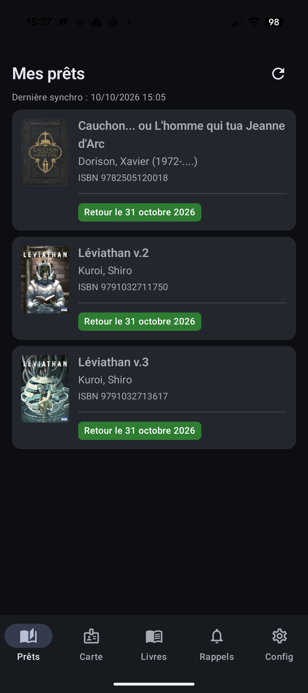

Vos prêts, en un coup d'œil
Combien de livres avez-vous empruntés ? Pour quand sont-ils à rendre ? La liste des prêts répond à ces deux questions d'un seul regard.
En pratique
- Tous vos emprunts en cours sont rassemblés au même endroit, avec leur date de retour.
- Un code couleur dit tout de suite où vous en êtes :
RAS l'échéance est encore loin · À rendre bientôt plus que quelques jours · En retard il est temps d'agir
- La liste se met à jour quand vous le voulez, d'une simple pression : aucune action cachée ne vous surprend.
- En ouvrant un prêt, l'application vous montre aussitôt la fiche de ce livre (voir la page « Découvrir »).
Les points forts
- La tranquillité d'esprit : on sait toujours ce qu'on a chez soi et jusqu'à quand.
- Un code couleur clair et instantané, compréhensible par tous.
- Toujours avec votre compte habituel de la bibliothèque : rien à configurer de compliqué.
